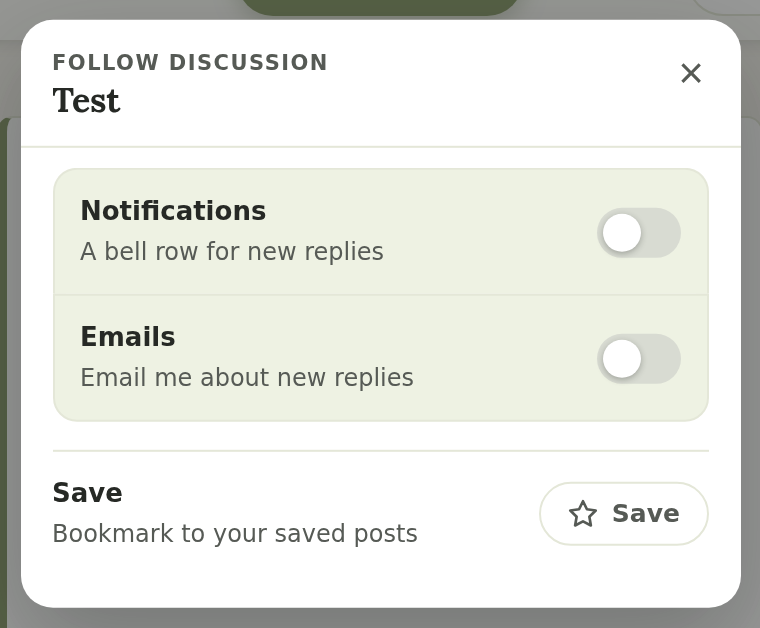
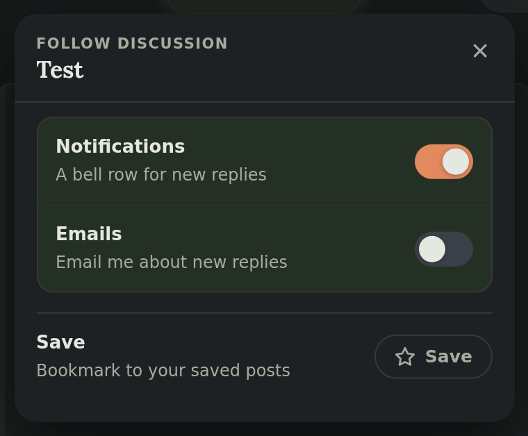
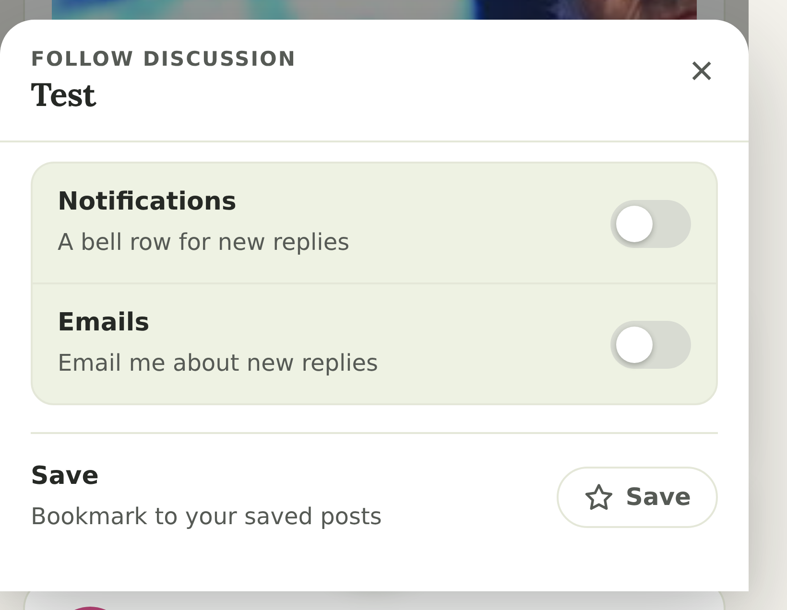
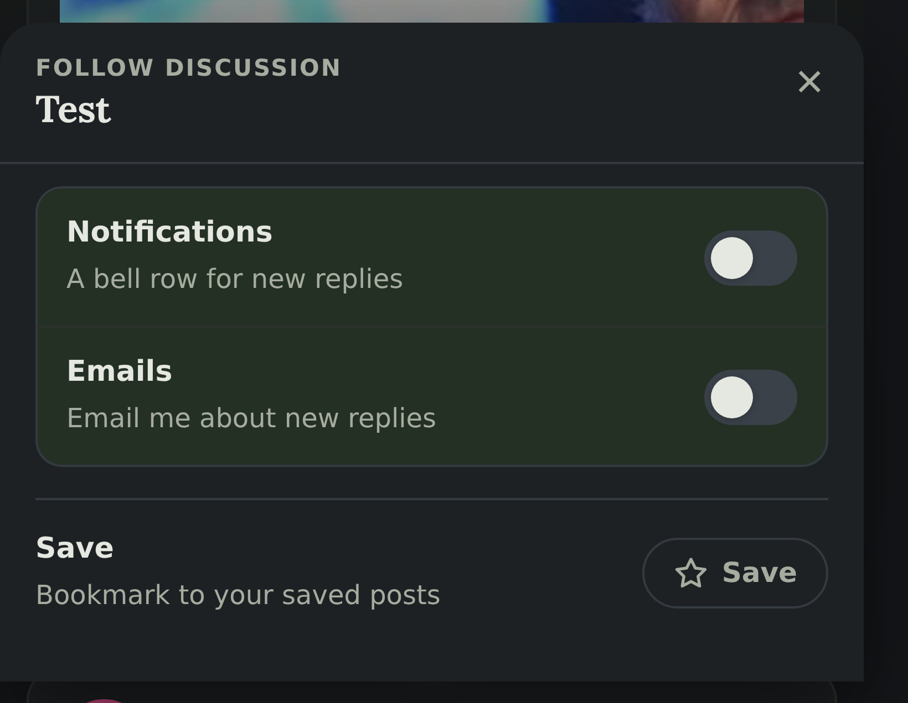
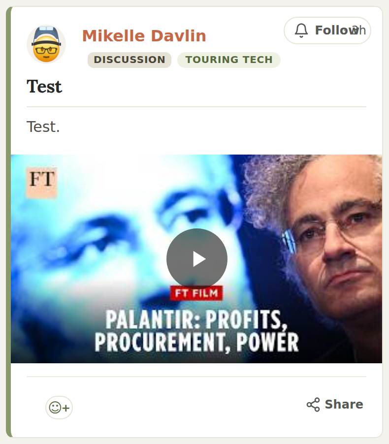
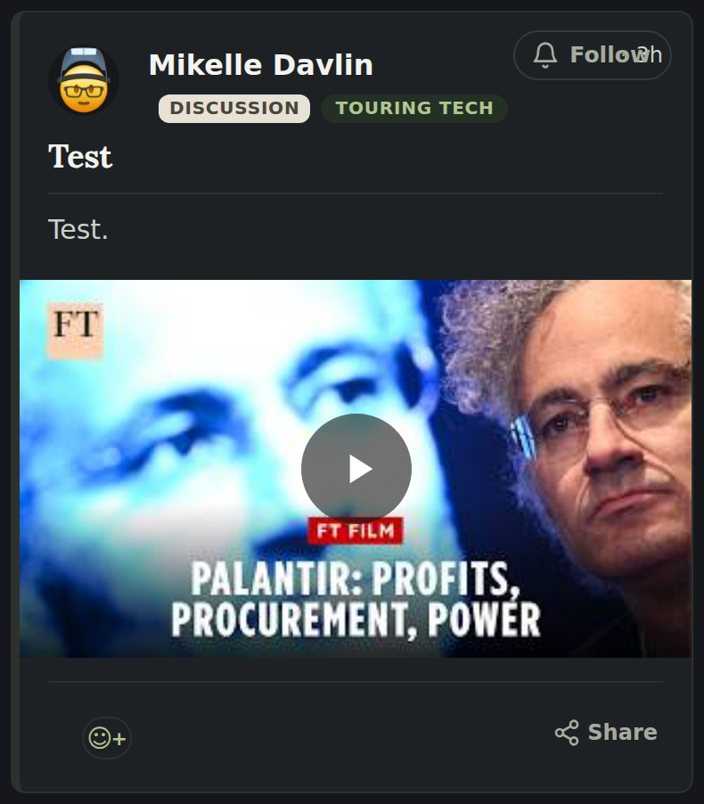
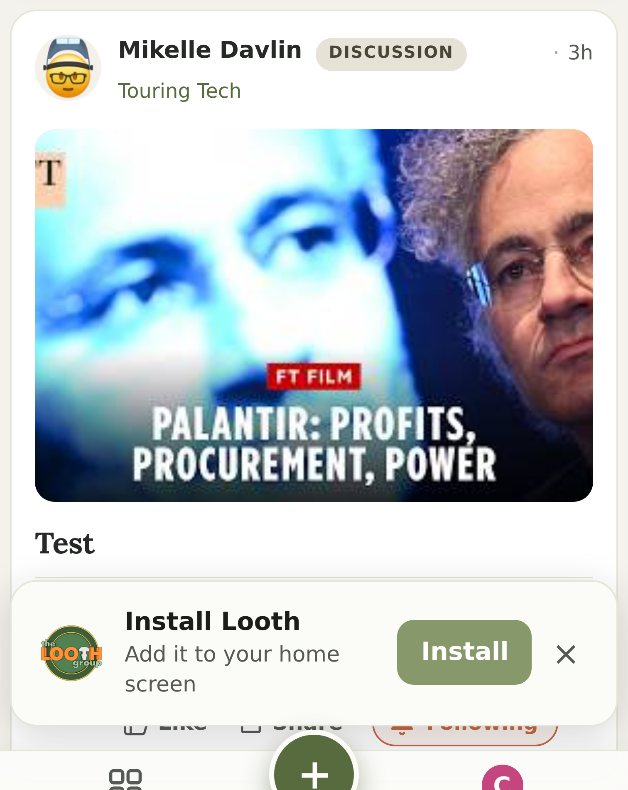
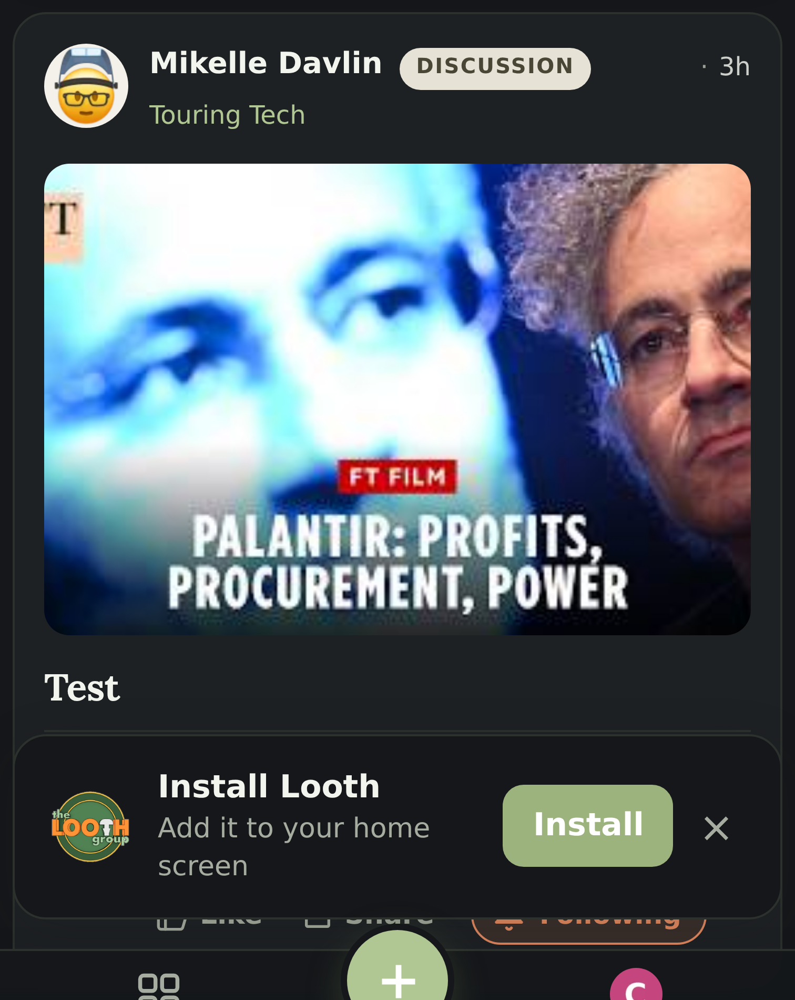

Real screenshots of the running branch, both themes, desktop and phone. A defect was found and fixed; the numbers below are measured contrast ratios, not opinions.
On a phone in dark mode the settings modal painted a white panel under near-white text. Desktop was fine, which is why it survived: the only dark re-point of the card background is scoped to an ancestor that a phone-width dialog does not sit under.
| Measured | Before | After |
|---|---|---|
| Modal panel background (dark, phone) | white | #1e2124 |
| Title contrast | 1.25 : 1 — invisible | 12.98 : 1 |
| “Follow discussion” eyebrow | 2.33 : 1 | 6.95 : 1 |
| Row labels | — | 11.06 : 1 |
| Switch track (off state) | light grey — read as ON | dark, clearly off |








Everything here is behind the off-by-default flag; it is on for this box only, never for live.